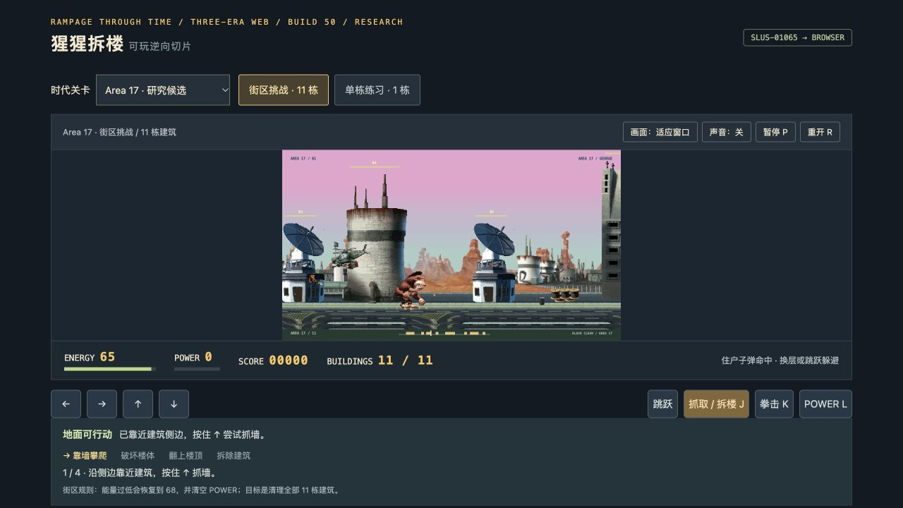

第三阶段用户验收通过 · 三个时代 / George
Area17 · 11栋 · Avalon · 7栋 · Old West · 8栋
2026-10-26用户确认跳跃卡死专项及剩余通关/重开、声音/后台返回、切关资源重置清单通过。用户报告与工具结果分记，不泛化所有设备。
第三关空中攻击异常已修复，三关回归/捕获参考重放通过。原控制器局部恢复与网页适配有明确来源边界；并非完整原引擎。

交付报告 · 用户验收 · 来源与边界